项目介绍
本项目作为yituliu.site的后端服务，为前端提供各种接口环境准备（window）
本项目以Java语言开发，使用Spring Boot进行开发，数据库使用Mysql，数据库持久框架使用了MyBatis-Plus，并使用了Redis作为缓存具体版本为：
JDK 17
Spring Boot 3.0.11
MySql 5.7.35
Redis 7.0.2
开发工具我个人比较推荐使用IDEA，可以使用免费的社区版
JDK安装
下载与安装
下载地址 JDK17下载地址 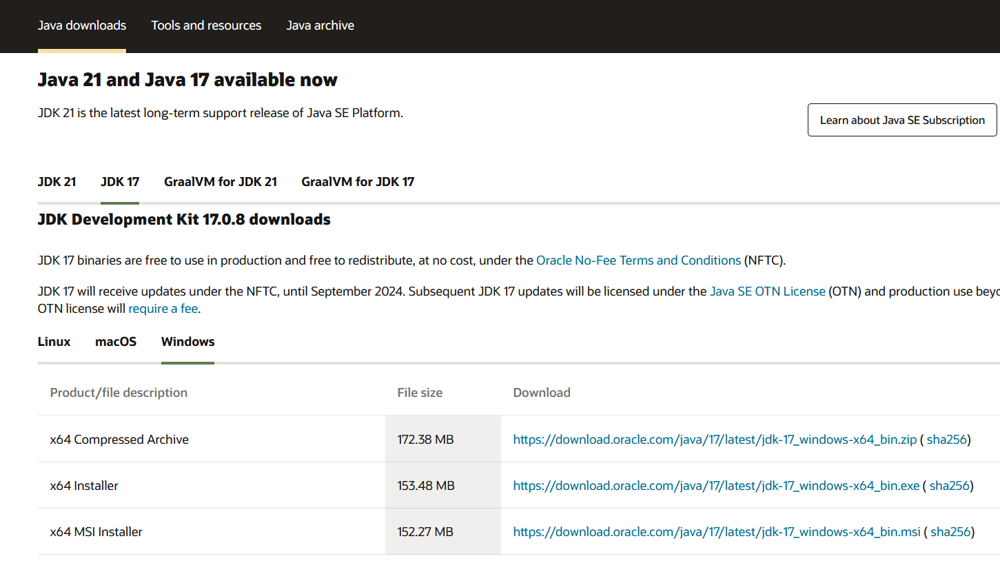 一般选择 “x64 Installer” 下载,然后点击安装，无其他需要选默认安装配置即可 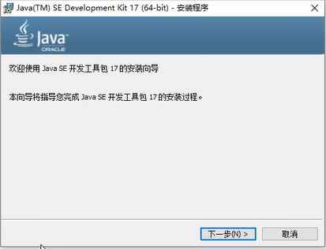 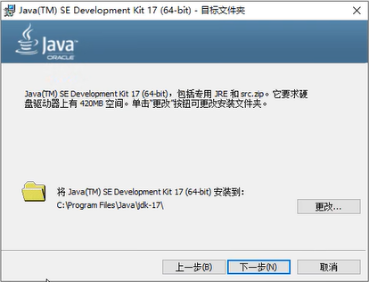配置JDK的环境变量
在“高级系统设置”中点击“环境变量” 选择“系统变量”点击“新建”按钮，新建一个变量
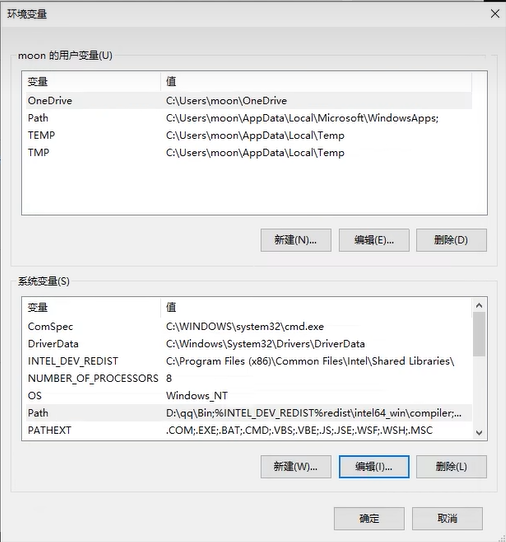
变量名输入“JAVA_HOME”（不带引号），变量值输入你的JAVA安装路径，点击确认
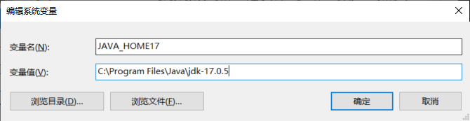
在“系统变量”中找到“path”变量并选中，点击“编辑”按钮
点击“新建”按钮，新建一个变量 ，输入“%JAVA_HOME%\bin”（不带引号），按回车
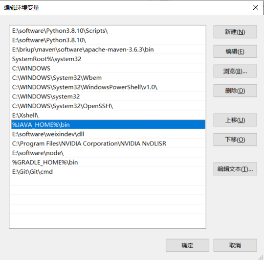
打开命令行输入
选择“系统变量”点击“新建”按钮，新建一个变量
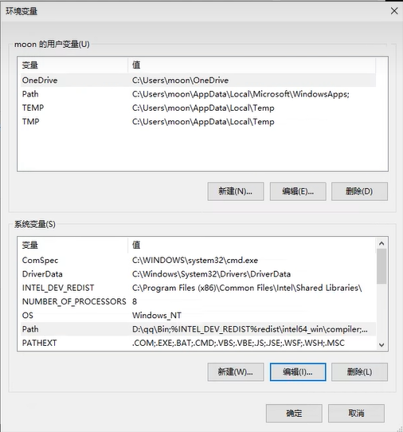
变量名输入“JAVA_HOME”（不带引号），变量值输入你的JAVA安装路径，点击确认
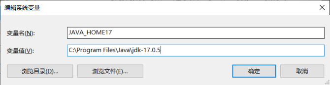
在“系统变量”中找到“path”变量并选中，点击“编辑”按钮
点击“新建”按钮，新建一个变量 ，输入“%JAVA_HOME%\bin”（不带引号），按回车
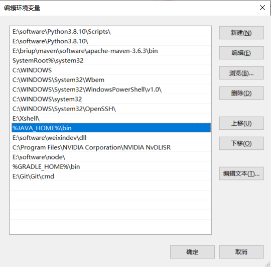
打开命令行输入
java -version
如出现以下类似提示则安装成功
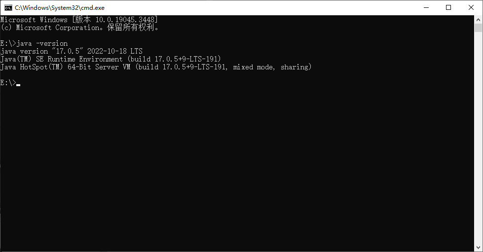
MySql安装
下载地址MySql（window版）下载地址，选择第二个安装包较大的下载 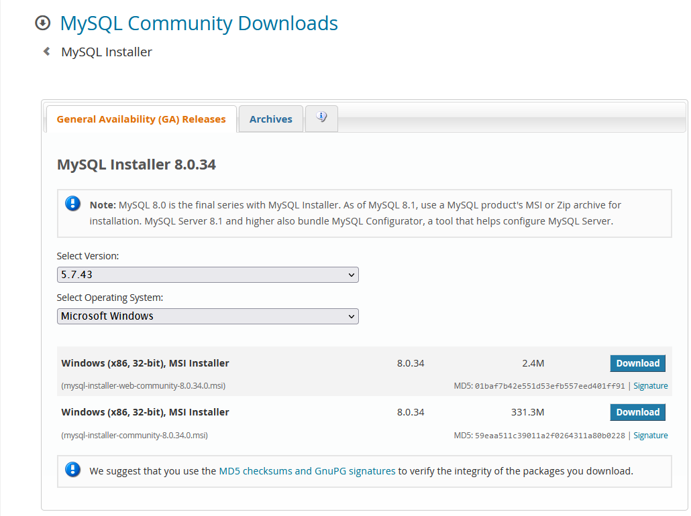 如果不太了解，前面基本选择默认就行，只需要注意在这一步配置你的MySql密码，后面需要用这个密码链接数据库，一路next直接安装即可 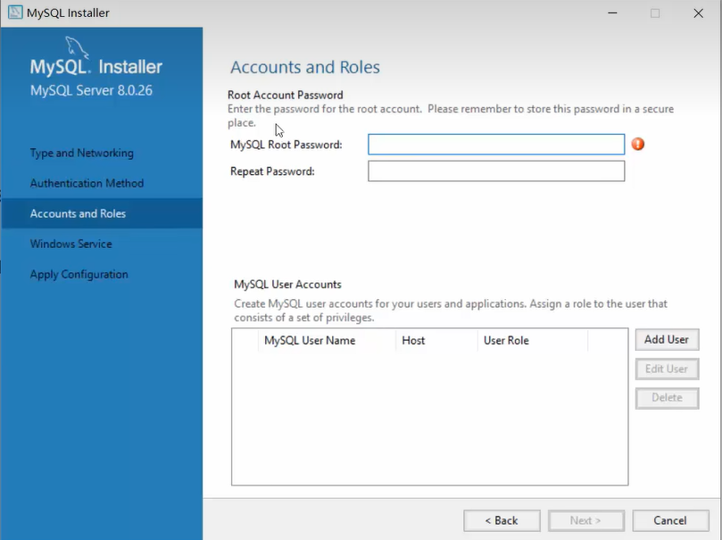Redis安装
Redis虽然也有非官方制作的Window版本但是一般用官方的Linux版本开发首先查看自己的Linux服务器上的gcc版本 在终端输入
gcc -v
会出现你的gcc版本信息
 一般4.8以上就差不多，较低则执行
一般4.8以上就差不多，较低则执行
yum -y install gcc- c++
之后在官网下载redis-7.0.2.tar.gz，将其放入我们的Linux目录 /opt 在/opt目录下解压redis-7.0.2.tar.gz
进入redis目录
cd redis-7.0.2
在redis-7.0.2目录下执行 make 命令
make && make install
查看默认安装目录： usr/local/bin
cd /usr/local/bin
将默认的redis.conf拷贝到一个自己定义的路径下，如：/myRedis
cd /opt/redis-7.0.2
mkdir /myRedis
cp redis.conf /myRedis/redis7.conf
修改redis7.conf配置文件
1. daemonize no 改为 daemonize yes
2. protect-mode yes 改为 protect-mode no
3. 默认密码bind 127.0.0.1 改为本机IP地址或者注释掉，否则无法远程连接
4. 添加Redis密码 改为 requirepass 密码
启动服务
redis-server /myRedis/redis7.conf
项目结构
project (src/main/)
com.lhs (java/)
common 各种项目的通用工具，配置，自定义注解，实体类
config 依赖的配置
entity 统一返回结果实体类
util 自定义封装的工具
annotation 自定义注解
entity 实体类包
po 与数据库字段映射的实体类
vo 主要用于返回前端所需字段的实体类
dto 主要用于将json等文件转换为实体类或接收请求参数等
mapper Mybatis-Plus 的接口包
service 服务层，进行接口和业务的具体实现
controller 控制器层 负责接收请求，接受页面过来的参数和数据，传给Service处理，接到返回值，再传给前端
resources (resources/) 资源文件夹
application.yml 用于切换生产和开发配置文件的配置文件
application-xxx.yml Spring Boot 配置文件，后面的xxx代表不同环境，如开发环境application-dev.yml
mapper Mybatis-Plus的自定义SQL方法包
基础开发示例
*建议先了解Java的基础语法和Spring Boot的基础用法基础API编写
新建一个实体类，在com.lhs.entity.po下新建一个Item.java文件
@Data //lombok注解，用于自动生成get，set
@TableName("item") //Mybatis-Plus的注解，用于实现数据库表与实体类的映射
@NoArgsConstructor //lombok注解 生成无参构造器
@AllArgsConstructor //lombok注解 生成全参构造器
@Builder //lombok注解 生成生成器
public class Item {
@TableId
private Long id; //数据库id
private String itemId; //物品id
private String itemName; //物品名称
private Double itemValue; //物品价值 单位：绿票
}
新建一个Mybatis-Plus的接口，在com.lhs.mapper下新建一个ItemMapper.java文件
//继承了BaseMapper的接口，可以得到Mybatis-Plus封装好的一些增删改查接口
@Repository
public interface ItemMapper extends BaseMapper<Item> {
}
新建一个Item的服务类，在com.lhs.mapper下新建一个ItemService.java文件
@Service //存入 Spring 容器中
public class ItemService {
private final ItemMapper itemMapper;
//构造器注入
public ItemService(ItemMapper itemMapper){
this.itemMapper = itemMapper;
}
/**
* 向Item类内设置属性值示例
* item.setId(1L);
* item.setItemName("D32钢");
* item.setItemId("11031");
* item.setItemValue(300.1)
*
*/
//向数据库插入一个item
public void saveItem(Item item){
itemMapper.insert(item);
}
//向数据库查询一个item
public Item getItem(String itemName){
QueryWrapper<Item> itemQueryWrapper = new QueryWrapper<>(); //条件构造器
itemQueryWrapper.eq("item_name",itemName); //给构造器写入查询条件
Item item = itemMapper.selectOne(itemQueryWrapper); 调用mapper接口查询
return item;
}
//向数据库更新一个item
public void updateItem(Item item){
QueryWrapper<Item> itemQueryWrapper = new QueryWrapper<>(); //条件构造器
long id = item.getId();
itemQueryWrapper.eq("id",id); //给构造器写入查询条件
itemMapper.update(item,itemQueryWrapper); 调用mapper接口更新
}
}
新建一个Item的控制器类，在com.lhs.controller下新建一个ItemController.java文件
@RestController
@CrossOrigin()
public class ItemController {
private final ItemService itemService;
//构造器注入
public ItemController(ItemService itemService){
this.itemService = itemService;
}
@GetMapping("/item")
public Result<Item> authUpdateStageInfo(@RequestParam String itemName) {
Item item = itemService.getItem(itemName);
return Result.success(item); //返回统一的结果实体类
}
}
完成上述文件的编写后，启动项目，假设本地项目端口为10010，则可通过以下请求地址 http://localhost:63342/item?itemName=D32钢
得到一个材料的信息
API流程的简述
在发出上面的请求后，首先会来到ItemController类，获取到参数itemName传给ItemService类的getItem方法，getItem方法内通过条件构造器写入查询条件
再将构造器传入ItemMapper的查询接口，Mybatis-Plus会根据构造器生成sql语句：SELECT `id`,`item_id`,`item_name`,`item_value` WHERE `item_name` = 'D32钢'
之后会执行这条sql查询到数据库表内的数据，将其返回，最终通过数据库字段与实体类的映射写入到Item类
（例如实体类的属性itemName（小驼峰写法）对应数据库表的字段item_name（下划线）如数据库字段与实体类属性命名不一致或数据库字段命名格式不为下划线等情况将无法映射， 需要在对应字段上加上注解@TableField(value = 'itemName')）